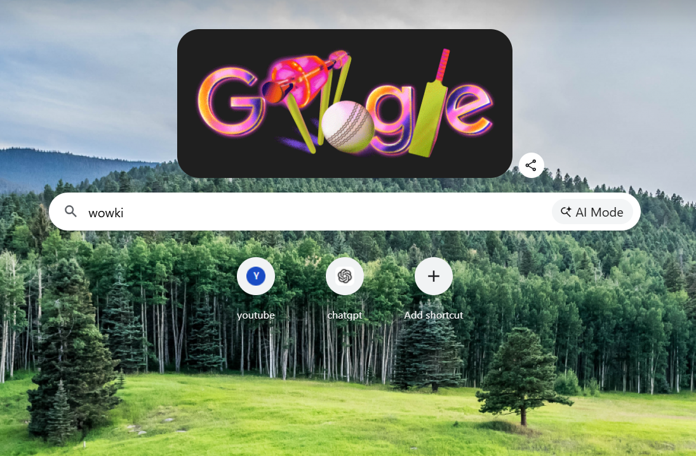
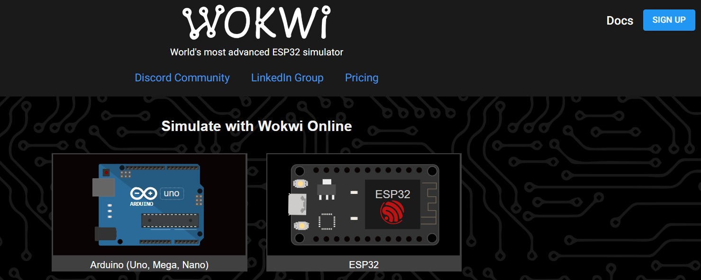
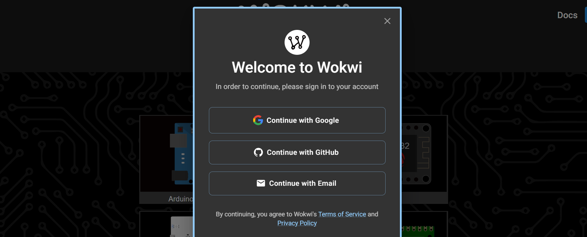
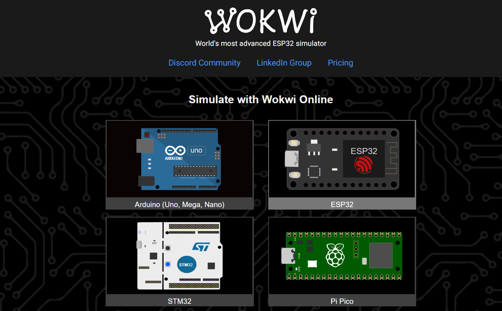
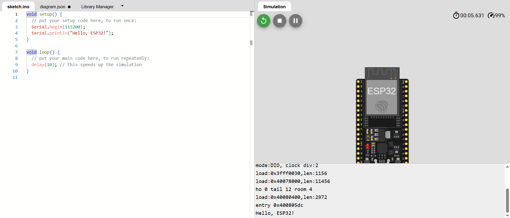
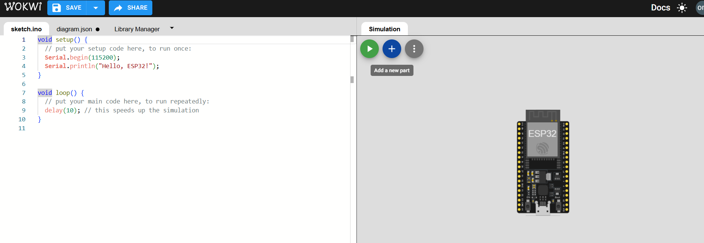
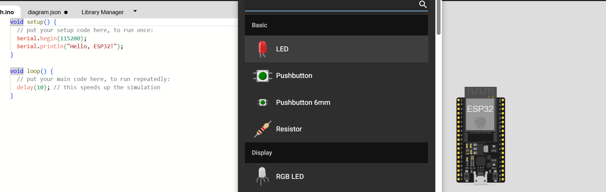
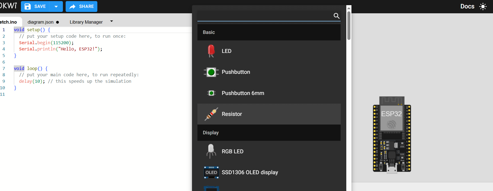
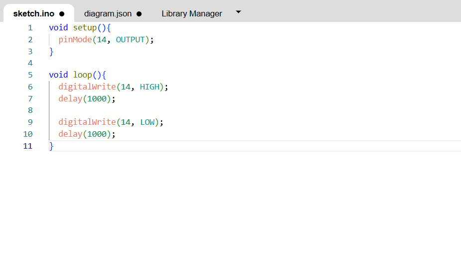

⚡ Day 10: ESP32 LED Blink using Wokwi Simulator
📌 Objective
Learn ESP32 simulation using Wokwi, build and test an LED Blink project, understand virtual circuit design, and manage project documentation using VS Code and GitHub.
🛠️ Phase 1: Environment Setup
1. Discovering Wokwi
Researched ESP32 simulators and identified Wokwi as a browser‑based simulation platform for Arduino, ESP32, STM32, and Raspberry Pi Pico projects.

2. Exploring the Wokwi Platform
Opened the Wokwi homepage and reviewed available templates, examples, and supported hardware boards.

3. User Authentication
Signed in using Google or GitHub to enable project saving, cloud access, and collaboration features.


4. Choosing the ESP32 Board
Selected an ESP32 development board template to create a new simulation project.

💻 Phase 2: Coding & Circuit Design
5. Verifying the Simulator
Created a basic ESP32 program with serial output to confirm that the simulation environment was functioning correctly.

6. Building the Circuit
Click on '+' sign to add components.

- A red LED
- A current‑limiting resistor


Connected the LED to the ESP32 GPIO pin (project target: GPIO 4).
7. Programming the LED Blink
Wrote the following code to toggle the LED every second. The program repeatedly turns the LED ON for one second and OFF for one second.
// ESP32 LED Blink on GPIO 14 (or change to 4)
#define LED_PIN 14
void setup() {
pinMode(LED_PIN, OUTPUT);
}
void loop() {
digitalWrite(LED_PIN, HIGH);
delay(1000);
digitalWrite(LED_PIN, LOW);
delay(1000);
}

🧪 Phase 3: Testing & Verification
8. Running the Simulation
Started the Wokwi simulator and observed the LED blinking continuously.
This confirmed that:
- The circuit wiring was correct.
- The ESP32 GPIO pin was configured properly.
- The software logic was functioning as expected.
This step demonstrated how ESP32 digital output pins can control external components such as LEDs.

📊 Learning Outcomes
🎯 Overall Outcome
- Successfully explored and configured the Wokwi ESP32 simulator.
- Built an ESP32 LED circuit using a GPIO output pin.
- Verified LED blinking through virtual simulation.
📌 Conclusion
This exercise covered the complete development cycle: simulation, circuit design, coding, testing, documentation, and version control. Using Wokwi, an ESP32 LED Blink project was created and validated in a virtual environment, making the project organized, reproducible, and easy to share with others. The screen recording serves as final verification of successful implementation.